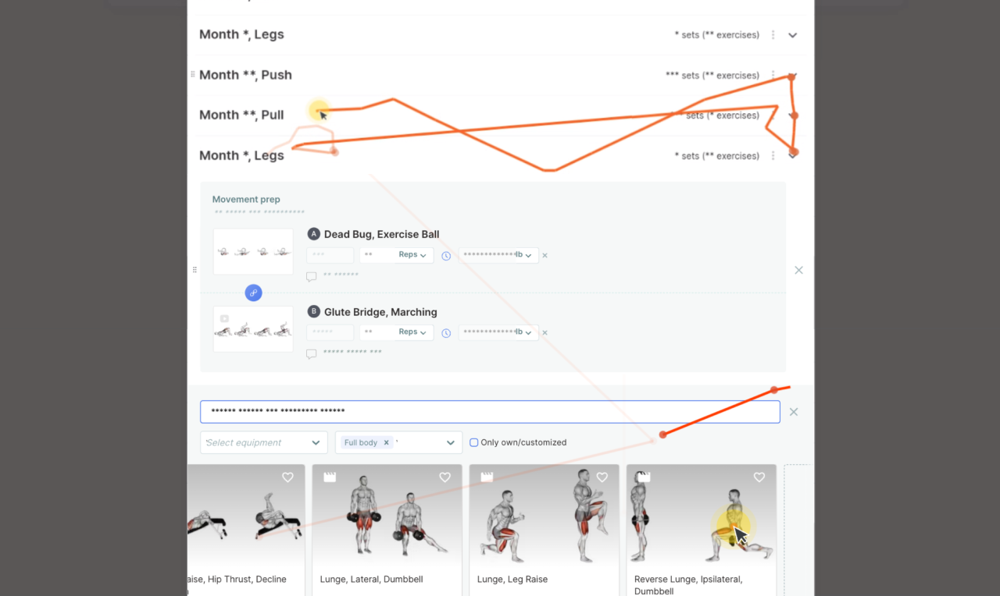
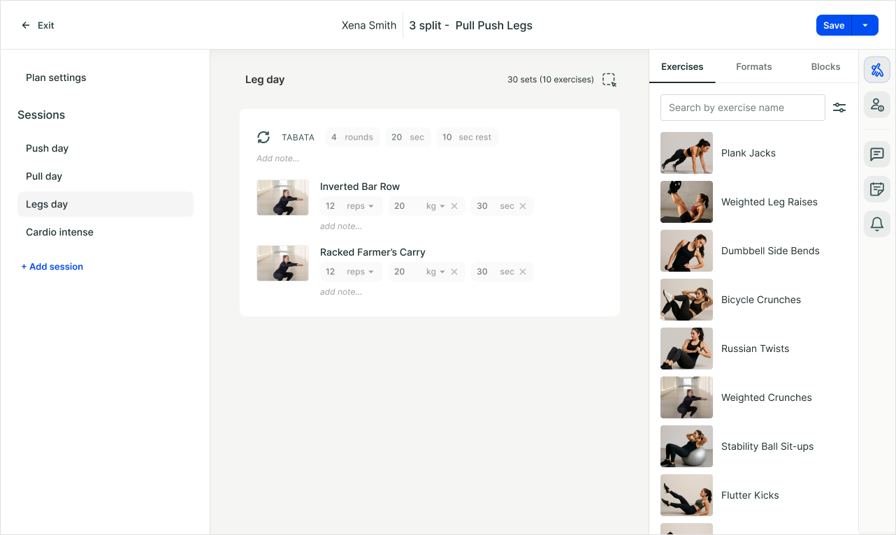
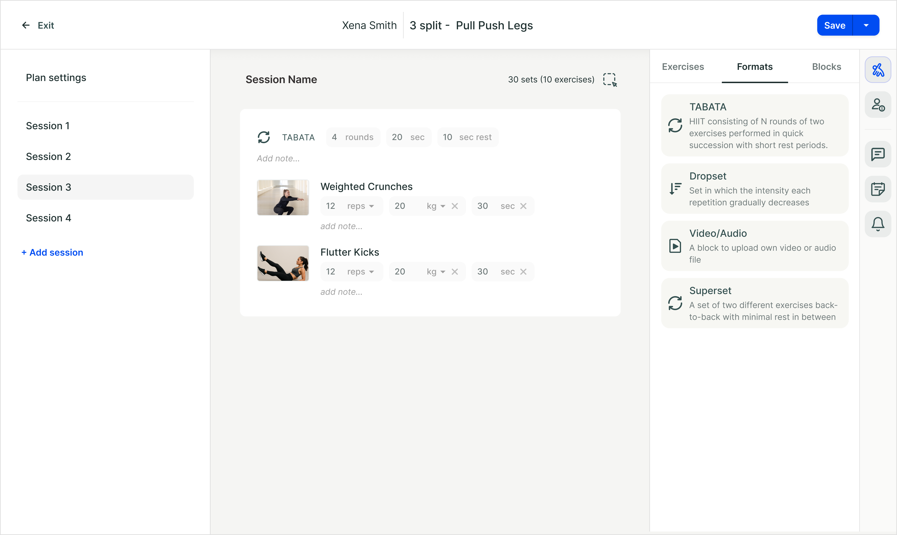

I led the redesign of the holistic training builder, making it easier and faster for coaches to create flexible, personalized workout plans with more training formats and better client integration.
Redesign the workout builder coaches use to create, customize, and assign plans to clients.
The current system is inflexible and lacks features for diverse coaching styles, from HIIT and CrossFit to clients with special needs.
What do coaches want to achieve with the training builder but currently can't?
What are the biggest pains and blockers in their use of the training builder?
Holistic coaches support clients in all areas of life, combining fitness, nutrition, mindset, and lifestyle for overall well-being.
People seeking support across multiple aspects of their lives, such as fitness, nutrition, mental well-being, and lifestyle habits, not just physical training.
We used an opportunity tree to organize issues from different research sources. Making it easier to map and prioritize which specific user opportunities would best achieve our desired business and product outcomes
The new interface brings everything into one view. Plan sessions on the left, exercises in the center, and client information on the right


The exercise selector now sits in the right panel making it faster and easier to search for and add exercises
We've added new formats like TABATA, EMOM, AMRAP, and video-based sessions to support a broader range of training styles

Clients will be able to follow along with their coach's video during workouts, creating a more interactive and engaging training experience